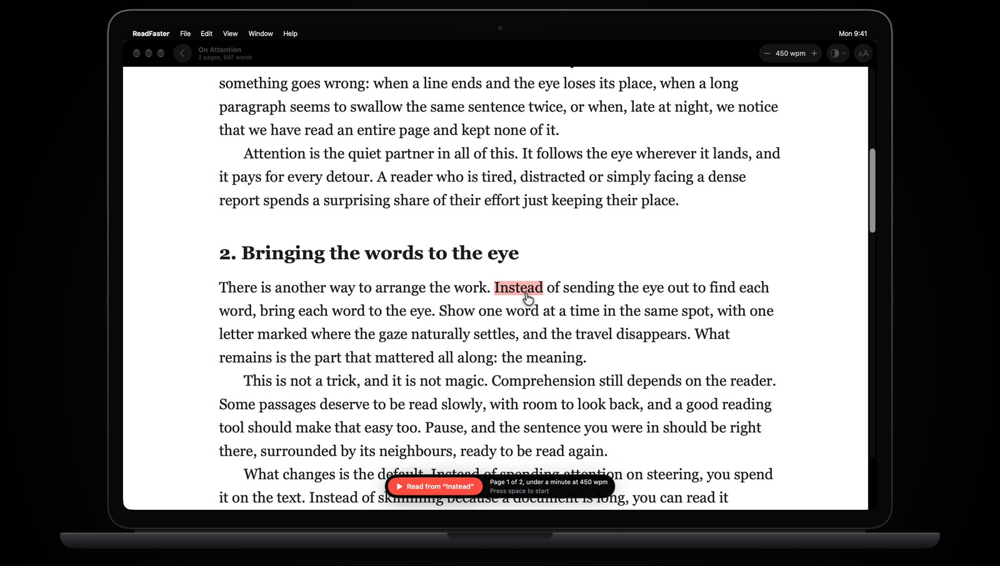
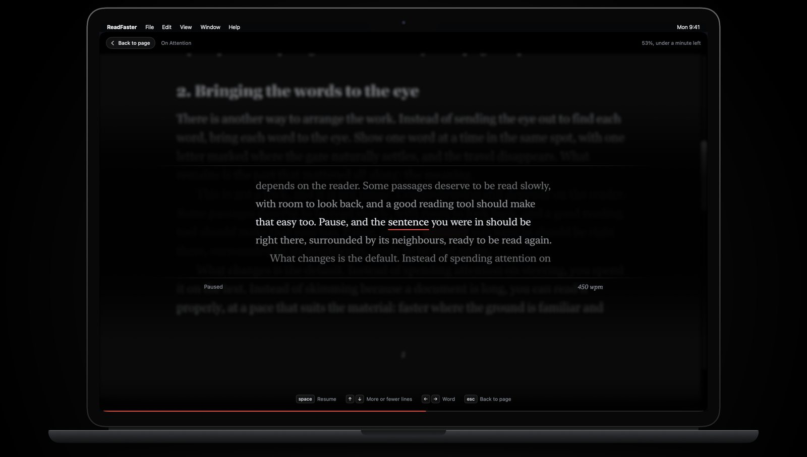
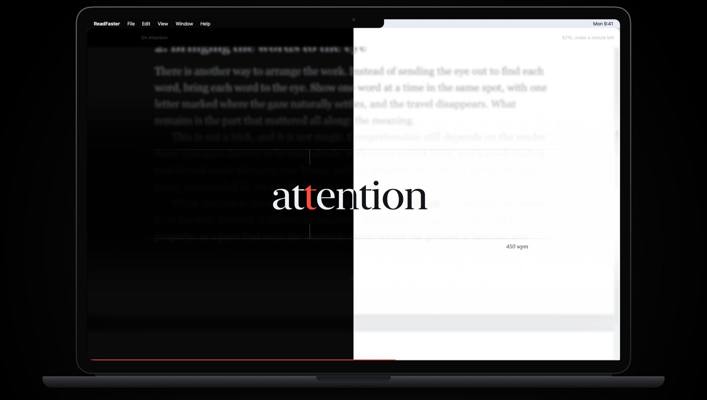
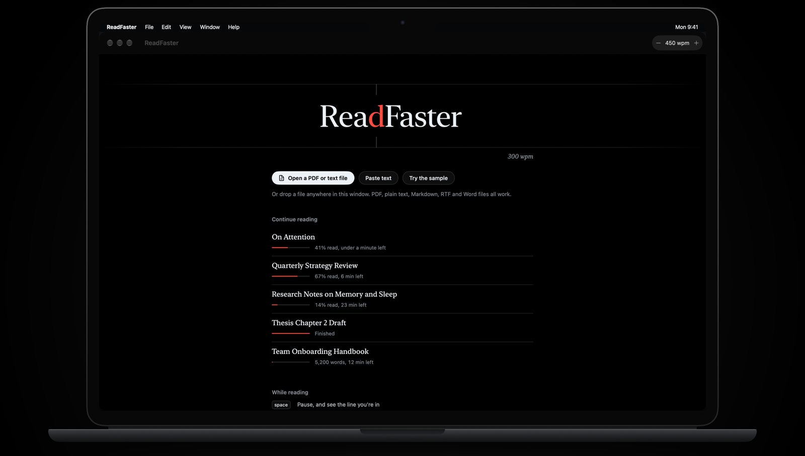

Read without moving your eyes.
ReadFaster shows one word at a time in the same spot, with a red letter where your eye naturally lands. Open any PDF, click a word and press space.
Open a PDF. Click a word. Read.
Your PDF opens exactly as it is: pages, headings, figures and all. Click any word to start from it. Running headers, footers and page numbers are skipped, and words split across lines are joined back together.

Lost the thread? Press space.
Reading stops and the line you were in appears around the current word. Press the up arrow to see more lines above and below, step back a word at a time, then carry on.

Easy on your eyes, day or night.
Light and dark themes follow your Mac. PDF pages can be dimmed or turned dark for late reading, and the page stays softly blurred behind the words.

Your library stays on your Mac.
Every document remembers where you stopped. PDF, plain text, Markdown, RTF, Word and HTML files all work, or paste in any text.

A few keys, nothing to learn
- space
- Start, pause and resume. Pausing shows the line you're in.
- ↑↓
- Faster or slower while reading. While paused, more or fewer lines around the word.
- ←→
- Back or forward a sentence. While paused, one word at a time.
- esc
- Back to the page, where you can click any word to start from.
- trackpad
- Scrolling does what the arrow keys do. Pinch to resize the word.
No account. No cloud. No tracking.
ReadFaster never connects to the internet. Your documents and reading positions stay on your Mac. Privacy policy